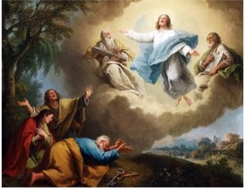

0033 After Jesus' sudden and shocking death, his followers spread his message and embellish or invent stories of his life. Our challenge is to separate the aspects of this remarkable life which are more likely to be historical from those that are not. Especially suspect are stories that feature angels, dreams, miracles, predictions of the future, and fulfillment of prophecies. Sometimes actual stories are embellished with miraculous features. Healing the sick and raising the dead may be examples of this. It is possible that people experienced a placebo effect merely from the touch of the holy man, similar to the effect of the Elder Zossima in rothers Karamazov or the effect of Caesar's presence upon his soldiers as described in Decline and Fall of the Roman Empire. It is also possible that Jesus mastered some of the magical tricks of the prophetic trade and impressed the mobs as can Penn and Teller. It is important to note that magic was a staple of the period and even Simon Magus was seen flying in the book of Acts. It is likewise no wonder that believers whose fundamental faith is based upon a miracle (the Resurrection) should have no qualms about mythologizing the life of their leader. After his death, convinced, in spite of overwhelming evidence to the contrary, that Jesus is the Messiah, believers pore over the Jewish Scriptures searching for any prophecy regarding the Messiah and write the fulfillment of those prophecies back into the life of Jesus, changing details wherever instructed by the "Holy Spirit."
As for Jesus’ elevation to the status as God, the early Christian community believe that he was deified upon his resurrection as attested by Pre-literary Traditions (terse statements in tightly structured formats with parallel statements).

One such fragment appears in Paul:
Romans 1:3 Concerning his Son Jesus Christ our Lord, which was made of the seed of David according to the flesh; 4 And declared to be the Son of God with power, according to the spirit of holiness, by the resurrection from the dead:
Paul is planning a mission to Spain and requires the help of the Christian community in Rome. Here he is trying to show that he is of one spirit with them by appealing to an earlier statement of faith, using phrases not characteristic of Paul (‘seed of David,’ ‘spirit of holiness,’ and not reflective of his beliefs (Jesus becoming the son of God at Resurrection).
Two more appear in Acts:
Acts 2:36 Peter: Therefore let all the house of Israel know assuredly, that God hath made the same Jesus, whom ye have crucified, both Lord and Christ.
Acts 13:33 Paul: God hath fulfilled the same unto us their children, in that he hath raised up Jesus again; as it is also written in the second Psalm, Thou art my Son, this day have I begotten thee.
Acts (written 80-85 AD) furthermore cannot be a record of the actual speeches, as Peter, an illiterate Aramaic- speaker, sounds just like Paul, an educated Greek-speaker.
For the evangelist Mark, Jesus is adopted by God at his baptism. Such adoption is common in the Roman world (cf, Octavian). As the community develops and the gospels are written, the divinization of Jesus is pushed further and further back: from the resurrection for the pre-literary tradition, to baptism for Mark, to his birth for Matthew and Luke, and finally to the moment of creation for John.
~~~~~~~~